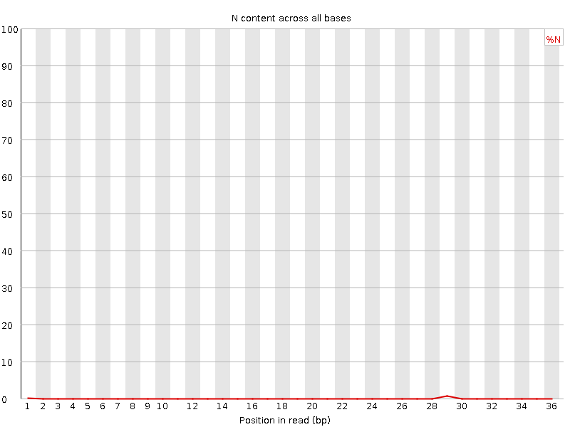

![[OK]](Icons/tick.png) Basic Statistics
Basic Statistics
| Measure | Value |
|---|---|
| Filename | sample.fastq |
| File type | Conventional base calls |
| Encoding | Sanger / Illumina 1.9 |
| Total Sequences | 6135470 |
| Filtered Sequences | 0 |
| Sequence length | 20-36 |
| %GC | 49 |
Per base sequence quality

Per sequence quality scores
Per base sequence content
Per base GC content
![[WARN]](Icons/warning.png) Per sequence GC content
Per sequence GC content
Per base N content

Sequence Length Distribution
Sequence Duplication Levels
Overrepresented sequences
| Sequence | Count | Percentage | Possible Source |
|---|---|---|---|
| GATCGGAAGAGCTCGTATGCCGTCTTCTGCT | 57989 | 0.9451435668335108 | Illumina Single End Adapter 1 (100% over 31bp) |
| GATCGGAAGAGCTCGTATGCCGTCTTCTGC | 30644 | 0.49945643935998385 | Illumina Single End Adapter 1 (100% over 30bp) |
| GATCGGAAGAGCTCGTATGCCGTCTTCTGCTT | 27228 | 0.44378018309925726 | Illumina Single End Adapter 1 (100% over 32bp) |
| GATCGGAAGAGCTCGTATGCCGTCTTCT | 15024 | 0.24487121606005732 | Illumina Single End Adapter 1 (100% over 28bp) |
| GATCGGAAGAGCTCGTATGCCGTCTTCTG | 13863 | 0.22594846034615115 | Illumina Single End Adapter 1 (100% over 29bp) |
| GATCGGAAGAGCTCGTATGCCGTCTT | 8924 | 0.14544932988018847 | Illumina Single End Adapter 1 (100% over 26bp) |
Kmer Content
| Sequence | Count | Obs/Exp Overall | Obs/Exp Max | Max Obs/Exp Position |
|---|---|---|---|---|
| ACACA | 674325 | 3.5826907 | 3.823276 | 32 |
| TGTGT | 645515 | 3.518432 | 4.879616 | 1 |
| CACAC | 659415 | 3.509497 | 3.7069602 | 29 |
| GTGTG | 618260 | 3.3865752 | 4.5508447 | 2 |
| GGAAG | 581135 | 3.1589744 | 37.134758 | 5 |
| GAAGA | 521540 | 2.8102806 | 36.5242 | 6 |
| AAGAG | 506340 | 2.7283769 | 34.980656 | 7 |
| CTTCT | 498870 | 2.6810706 | 29.649069 | 24 |
| CTGCT | 489190 | 2.6420753 | 19.550955 | 27 |
| AGAGC | 485275 | 2.6193645 | 34.604393 | 8 |
| TTCTG | 473580 | 2.563157 | 27.46068 | 25 |
| TCTGC | 464400 | 2.5081863 | 24.712374 | 26 |
| GAGCT | 462385 | 2.5053709 | 34.386314 | 9 |
| AGCTC | 463315 | 2.4927788 | 34.07542 | 10 |
| TCTTC | 462580 | 2.4860377 | 30.334454 | 23 |
| ATGCC | 409445 | 2.2029414 | 33.120724 | 17 |
| GTCTT | 380745 | 2.0607061 | 31.553324 | 22 |
| GTATG | 345495 | 1.8759632 | 33.365547 | 15 |
| TATGC | 338685 | 1.8260704 | 32.998928 | 16 |
| TGCTT | 319745 | 1.7305559 | 8.138616 | 28 |
| CGGAA | 313795 | 1.6937685 | 35.507847 | 4 |
| GATCG | 307540 | 1.6663642 | 35.339794 | 1 |
| ATCGG | 290300 | 1.5729517 | 35.324833 | 2 |
| TGCCG | 287240 | 1.5590473 | 32.446125 | 18 |
| TCGGA | 287000 | 1.5550709 | 35.29791 | 3 |
| GCTCG | 273010 | 1.4818114 | 33.10354 | 11 |
| CCGTC | 263165 | 1.4183438 | 31.519003 | 20 |
| GCCGT | 259910 | 1.4107088 | 31.737804 | 19 |
| CTCGT | 257775 | 1.3922218 | 32.808163 | 12 |
| CGTCT | 253760 | 1.370537 | 31.422865 | 21 |
| CGTAT | 236180 | 1.2733996 | 32.548 | 14 |
| TCGTA | 230730 | 1.2440151 | 32.589268 | 13 |